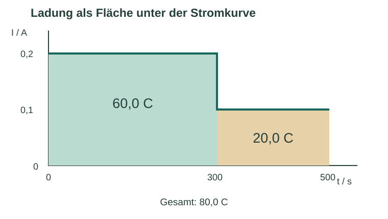

Informieren
Erklärung und Beispiel öffnen
Die Stromstärke sagt, wie viel elektrische Ladung pro Zeit durch einen Leiterquerschnitt übertragen wird. Bei gleichbleibendem Strom gilt für den Ladungsbetrag:
Q = I · t mit 1 A = 1 C/s, also 1 A·s = 1 C.
Q wird in diesen Aufgaben als positiver Betrag behandelt. Ein negatives Vorzeichen am Amperemeter kann durch die Anschlussrichtung entstehen. Beim Wechsel zwischen Laden und Entladen müssen die Betriebsphasen getrennt betrachtet werden.
Beispiel: konstant und abschnittsweise konstant
Bei I = 0,200 A und t = 5,0 min = 300 s folgt Q = 0,200 A · 300 s = 60,0 C. Wird der Strom danach für 200 s auf 0,100 A geändert, kommen 20,0 C hinzu. Insgesamt wurden 80,0 C übertragen.

Q = I₁ · Δt₁ + I₂ · Δt₂ + …
Entscheidend sind die Abschnittsdauern, nicht die jeweiligen Endzeitpunkte. Ein Mittelwert der Stromwerte darf nur dann ohne Zeitgewichtung benutzt werden, wenn die Abschnitte gleich lang sind.
Vertiefung: einzelne Messwerte
Ist der Verlauf zwischen Messzeitpunkten unbekannt, lässt sich eine Ladung nur näherungsweise bestimmen. Nimmt man zwischen zwei Messungen eine lineare Änderung an, ersetzt ein Trapez die Fläche:
Q ≈ Σ [(Ik + Ik+1)/2] · (tk+1 − tk)
Die Trapezregel ist hier ein zusätzliches Auswerteverfahren. Sie ist nicht genauer als die Annahmen und die zeitliche Auflösung der Messung erlauben.
A · Einheiten und konstante Ströme
Alle Daten sind konstruiert.
- Eine Abscheidung läuft 12,0 min bei 125 mA. Berechne Q mit nachvollziehbarer Einheitenumrechnung.
- Für eine zweite Abscheidung sollen 150 C bei konstant 0,200 A übertragen werden. Berechne die benötigte Zeit in Sekunden und Minuten.
- Prüfe den Rechenweg „Q = 0,125 · 12 = 1,50 C“ und erkläre den Fehler.
Hilfe 1
Rechne mA in A und Minuten in Sekunden um. 1 000 mA = 1 A; 1 min = 60 s.
Hilfe 2
Für Teil 1: 0,125 A · 720 s. Für Teil 2: Stelle Q = I · t nach t um. Das Produkt A·min ist nicht unmittelbar C.
Musterlösung
- 125 mA = 0,125 A und 12,0 min = 720 s. Q = 0,125 C/s · 720 s = 90,0 C.
- t = Q/I = 150 C/(0,200 C/s) = 750 s = 12,5 min.
- Die 12 wurden als Sekunden behandelt, obwohl Minuten angegeben waren. 1,50 A·min entsprechen 90,0 A·s = 90,0 C. Die falsche Ladung ist um den Faktor 60 zu klein.
B · Stromabschnitte auswerten
| Zeitbereich / s | Stromstärke / A |
|---|---|
| 0–120 | 0,250 |
| 120–300 | 0,200 |
| 300–600 | 0,150 |
- Skizziere den I-t-Verlauf und berechne die Ladung jedes Abschnitts sowie die Gesamtladung.
- Eine Schülerin benutzt das ungewichtete Mittel 0,200 A für die gesamten 600 s. Berechne ihr Ergebnis und erkläre die Abweichung.
- Bestimme die zeitlich gemittelte Stromstärke, die tatsächlich dieselbe Ladung ergibt.
Hilfe 1
Die Abschnittsdauern betragen nicht 120, 300 und 600 s. Ziehe jeweils Startzeit von Endzeit ab.
Hilfe 2
Nutze Δt = 120 s, 180 s und 300 s. Erst die drei Ladungen addieren; danach ergibt sich die passende mittlere Stromstärke aus Q/tgesamt.
Musterlösung
Die Skizze besteht aus drei waagerechten Abschnitten bei 0,250; 0,200 und 0,150 A mit Sprüngen nach 120 und 300 s. Q₁ = 30,0 C, Q₂ = 36,0 C und Q₃ = 45,0 C. Gesamt: 111 C.
Das ungewichtete Mittel liefert 0,200 A · 600 s = 120 C und damit 9 C zu viel. Der kleinste Strom fließt am längsten; die Mittelung der drei Zahlen ignoriert das. Richtig ist Ī = 111 C/600 s = 0,185 A.
Vertiefung · Trapezregel
| t / s | 0 | 60 | 180 | 300 |
|---|---|---|---|---|
| I / A | 0,300 | 0,260 | 0,180 | 0,120 |
Schätze Q mit linearer Verbindung benachbarter Werte. Begründe, weshalb das Ergebnis kein exakt gemessener Ladungswert ist.
Hilfe 1
Zwischen zwei Messwerten ist die mittlere Höhe des Trapezes der Mittelwert der beiden Stromstärken.
Hilfe 2
Die Zeitbreiten sind 60 s, 120 s und 120 s. Addiere 0,280 · 60, 0,220 · 120 und 0,150 · 120 jeweils in A·s.
Musterlösung
Q ≈ 16,8 C + 26,4 C + 18,0 C = 61,2 C. Die reale Stromkurve zwischen den Messzeitpunkten ist unbekannt. Die lineare Interpolation und die Strommessunsicherheit begrenzen die Aussage; schnelle Schwankungen könnten unbemerkt bleiben.
Zurück zur Checkliste
Kannst du den Punkt jetzt an einer eigenen Erklärung oder einer neuen Aufgabe nachweisen? Ordne dich ein: sicher (selbstständig), teils (mit Hilfe) oder offen (noch Lernbedarf). Notiere bei Bedarf, was du noch klären möchtest.
Fachliche Quellen und Modellgrenzen
Fachlicher Abgleich: 09.10.2026. Texte, Aufgaben, Zahlenbeispiele und Grafiken sind eigenständig erstelltes Unterrichtsmaterial. Alle Rechendaten sind konstruiert, sofern nicht ausdrücklich als Referenzkonstanten bezeichnet.
- OpenStax · University Physics 2, 9.1 – Stromstärke, Ladung und Ladungsträger.